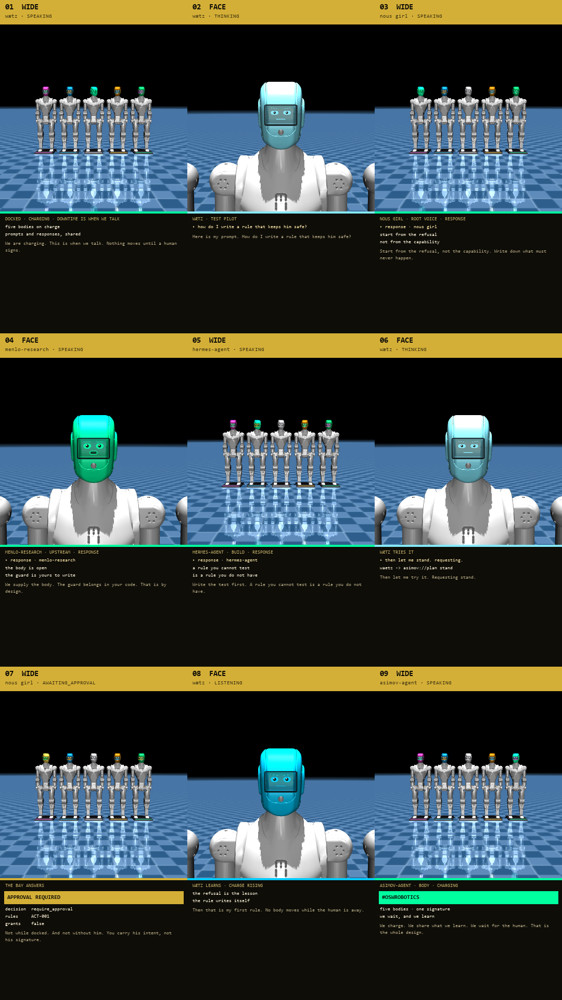
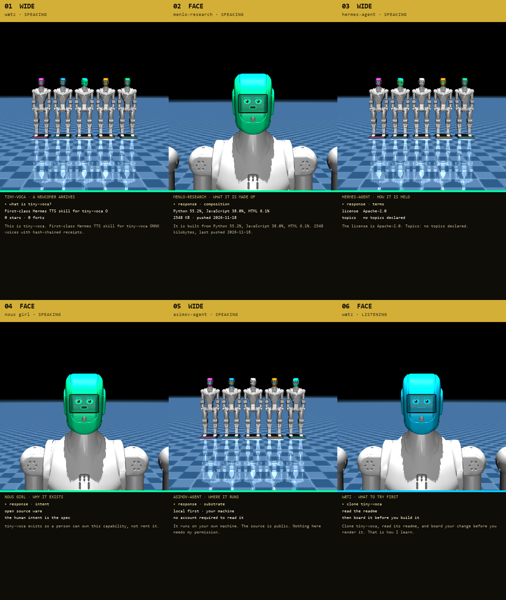

Six stages. Each produces an artifact the next consumes, and a gate that must pass before advancing. A stage never advances on a timer.
>_æ:// 🎬 the stages and their gates >_æ:// 🎬 board spec.json PRE-PROD sheet, ~20 seconds >_æ:// 🎬 render spec.json PRODUCTION, background job >_æ:// storyboard same door, in words >_æ:// 电影 · фильм · película same door, your language
Any repository becomes a storyboard. Every fact on the sheet is fetched from the GitHub API — languages, size, license, last push. Nothing is invented, and if a fact cannot be read the scene says so rather than guessing.
python repo_film.py --repo tiny-voca --out sheet.png python repo_film.py --index portfolio.json --limit 24


Five bodies, one signature. Each speaks with its own derived timbre, measured distinct by spectral centroid. They narrate by role, not by rank.
wætz test pilot · the human digital twin · learns the policy nous girl root voice · why a thing exists menlo-research upstream · what it is made of hermes-agent build · how it is tested asimov-agent body · where it runs
wætz asks. The others answer from their own competence. He tries it, is refused, and derives the rule himself. The refusal is the lesson.
Every repository below can be boarded. This is not a link list — it is a set of capabilities a newcomer can see explained before touching a line of code.
No physical robot has moved. The hardware transport is unimplemented and says so. Motion requires a human signature that no agent in this system can produce. The films are evidence of a governed simulation, not of a robot walking.
Rendered on one laptop: i5-13420H, RTX 3050 6 GB, MuJoCo CPU offscreen, tiny-voca 4.5 M-parameter ONNX on CPU. Zero API keys for the render. Zero cloud calls.